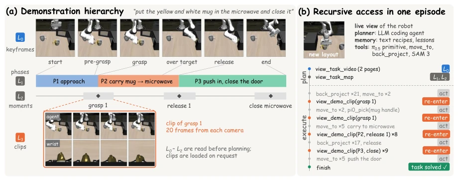
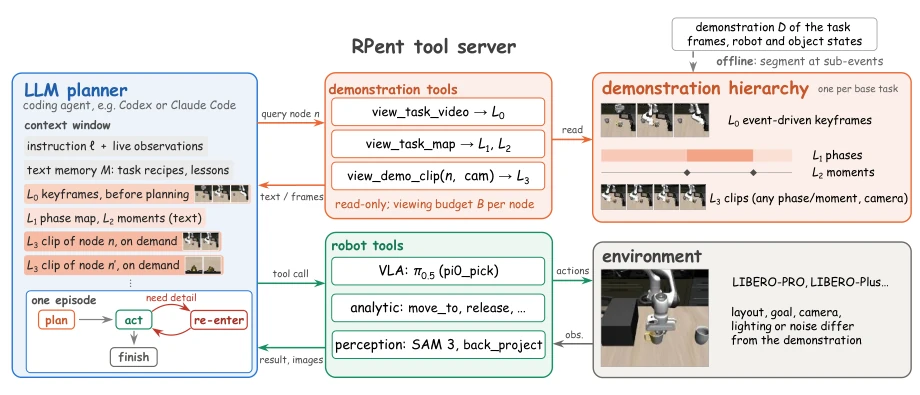
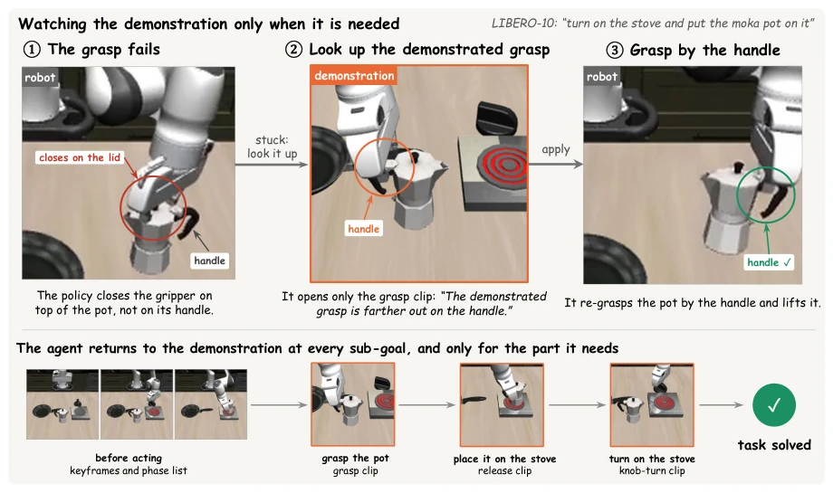

This paper employs a form of 'recursion' in how it feeds video to robot Agents, which is quite interesting. Previously, Agents could not remember 'how to grasp', only 'whether it grasped'; RV-ICL attempts to address this using video hierarchies. However, essentially it still relies on the LLM's context window to handle the load, merely feeding the video in chopped segments. The biggest drawback is the dependency on sub-event segmentation; if a task lacks obvious grasp/release signals (e.g., pushing boxes), this method fails. Furthermore, it is entirely simulation-based; real-robot transfer? Let's not rush. However, achieving a success rate increase from 92.6% to 96.5% on LIBERO-PRO indicates this approach is indeed more effective than directly inserting keyframes for long-horizon tasks. It can be considered finding a practical deployment strategy for long-video understanding in embodied intelligence; although it somewhat 'treats symptoms rather than the root cause', as a training-free method, its cost-effectiveness is indeed high.
研究动机Motivation
现有 LLM Agent 系统（如 HarnessVLA）依赖文本记忆记录执行轨迹，但这只能记录“做了什么”，无法捕捉“怎么做”的空间与时间细节（Zhang et al., 2026c）。视频演示虽然包含所有细节，但直接放入上下文面临三个难题：长度导致模型性能下降（Liu et al., 2024），关键帧丢失接触细节，且固定格式无法适应规划与执行不同阶段的信息需求。文本无法描述抓取角度或释放时机，而视频虽直观却难以检索。因此，需要一种既能保留视频细节又能按需检索的机制，解决 Agent 在分布偏移下对精细操作指导的缺失问题。此外，现有 In-Context 学习方法多将演示作为前缀一次性展示，未考虑 Agent 在长程决策中信息需求的动态变化，导致资源浪费或信息缺失。
Existing LLM Agent systems (e.g., HarnessVLA) rely on text memory to record execution trajectories, but this can only record 'what was done', failing to capture spatial and temporal details of 'how it was done' (Zhang et al., 2026c). Although video demonstrations contain all details, directly inserting them into context faces three challenges: length causing model performance degradation (Liu et al., 2024), keyframes losing contact details, and fixed formats unable to adapt to information needs across different planning and execution stages. Text cannot describe grasp angles or release timing, whereas video is intuitive yet difficult to retrieve. Therefore, a mechanism is required that retains video details while enabling on-demand retrieval, addressing the lack of fine-grained operational guidance for Agents under distribution shift. Furthermore, existing In-Context Learning methods typically present demonstrations as a prefix in a single pass, neglecting the dynamic changes in information needs during long-horizon decision-making, resulting in resource waste or information gaps.
The core of RV-ICL lies in transforming demonstration videos into a hierarchical index navigable by the Agent, rather than static context. First, the system offline segments demonstration D by sub-events (e.g., gripper opening/closing, joint motion), constructing a four-layer structure: L0 consists of task keyframes, L1 consists of stage text (including duration, action), L2 is the timestamp index, and L3 comprises specific video clips. The Agent interacts via three read-only tools: `view_task_video` reads L0 paginated, `view_task_map` retrieves L1/L2 text indices, and `view_demo_clip` loads L3 clips on demand. The execution flow is divided into two phases: planning and execution. Before planning, the Agent reads L0-L2 to establish macro sub-goals; during execution, when facing fine-grained contact (e.g., grasping) or step failure, the Agent recursively enters the hierarchy, loading only the L3 clip corresponding to the current sub-goal (e.g., 20 frames at the moment of grasp). This mechanism allows the Agent to obtain key contact details while maintaining a streamlined context. Hierarchy construction requires no training, and through tool descriptions, it forces the Agent to re-localize objects rather than directly reusing demonstration coordinates, thereby adapting to different scenarios. Recursive access is constrained by budget B to prevent infinite loop viewing.

Figure 1: Overview of RV-ICL on a task from the LIBERO-10 suite of LIBERO-PRO. The agent receives one demonstration of the task as a hierarchy (a) and consults it while solving the same task in a new layout (b). (a) The hierarchy has four levels: L0 event-driven keyframes (thin lines mark their time), L1 phases between grasps and releases, L2 moments around each sub-event, and L3 20-frame clips, here of the first grasp. (b) The tool calls of one solved evaluation episode (consecutive calls grouped, robot actions in grey, re-entries in orange). The agent reads L0–L2 while planning and loads clips only during execution. Each re-entry loads the clip of the current sub-goal: the grasp, the release or the closing of the door.

Figure 2: Architecture of RV-ICL on RPent. Each demonstration is segmented offline at its sub-events into a four-level hierarchy. During an episode the LLM agent acts through the harness. Robot tools execute on the environment, and read-only demonstration tools load a level of the hierarchy into the agent’s context. The agent reads the coarse levels (L0–L2) before planning and loads a clip whenever its current sub-goal needs more detail.
Evaluated on LIBERO-PRO and LIBERO-Plus benchmarks, comparing various VLA (e.g., OpenVLA, π0) and Agent systems (Cap-X, HarnessVLA). The primary metric is task success rate. RV-ICL improved HarnessVLA's success rate on LIBERO-PRO from 92.6% to 96.5%, showing significant improvement on long-horizon LIBERO-10 tasks. Ablation experiments indicate that using only keyframes or full video performs worse than RV-ICL, demonstrating that on-demand loading of details is superior to full input. Under seven perturbations (lighting, viewpoint, etc.) in LIBERO-Plus, RV-ICL demonstrated robust performance with a success rate of 95.8%. Analysis shows the Agent recursively calls demonstrations in 97% of episodes, primarily concentrated in grasp or release phases; failure cases are mostly due to repeated failure of the same step type that cannot be corrected via video. Furthermore, the method is effective across different Planners (Codex vs Claude), showing acceptable generalization.

Figure 3: How the agent uses the demonstration in one LIBERO-10 episode from our LIBERO-PRO runs. Top: the policy closes the gripper on top of the moka pot (1). The agent does not replay the whole video. It opens only the grasp clip, where the demonstrator takes the pot by its handle (2), and then re-grasps the pot by the handle (3). Bottom: across the episode the agent reads the keyframes and the phase map before acting, then opens one short clip at each sub-goal. Robot views are crops of the episode video, demonstration views are frames of the demonstration, and the quote is the agent’s own message.